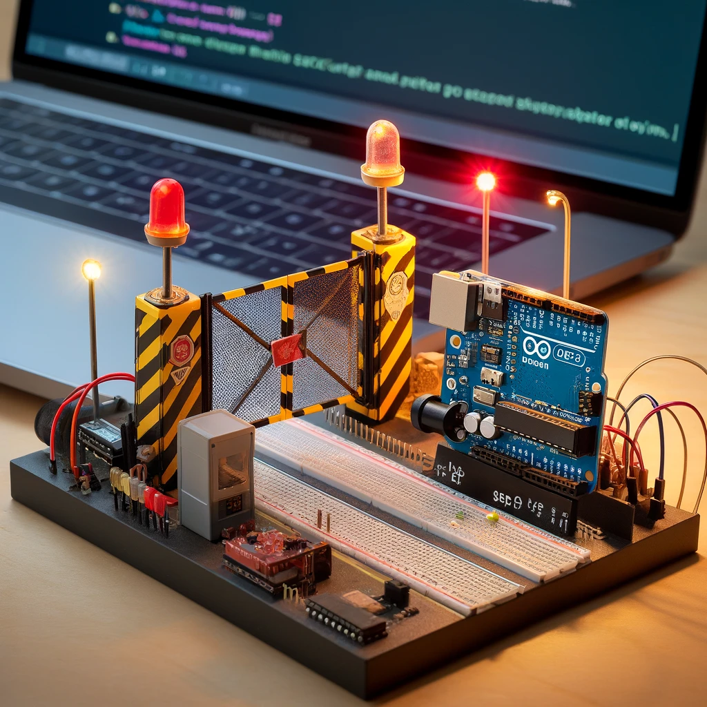

Project 3: Slagboom Opstelling met ESP32
Gebruikte Technologieën:
- ESP32 Microcontroller
- Arduino IDE
- Drukknop
- Servomotor
- Twee rode LEDs
- Eén gele LED
- Laptop voor programmeren en testen
- Breadboard en jumpers voor circuitopbouw
Skills:
- Hardware-integratie: Correct aansluiten van ESP32, LEDs, drukknop en servomotor.
- Programmeren: Code schrijven in Arduino IDE met bibliotheken voor de servomotor en LED aansturing.
- Probleemoplossing: Debuggen van hardware en softwareproblemen.
- Samenwerking: Duidelijke documentatie en teamwork voor succesvolle uitvoering.
Uitdagingen:
- Correcte configuratie van GPIO pinnen op de ESP32.
- Synchronisatie van knipperende LEDs en beweging van de servomotor.
- Debuggen van instabiliteiten in het breadboardcircuit door losse verbindingen.
- Aanpassen van Arduino Nano code naar ESP32, inclusief pinmapping.
Resultaat:
Het project is succesvol afgerond en alle vereisten zijn behaald. De slagboom functioneert perfect:
- Drukknop bestuurt de servomotor soepel tussen open en gesloten posities.
- Rode LEDs knipperen afwisselend wanneer de slagboom gesloten is, met een interval van 500ms.
- Gele LED knippert wanneer de slagboom geopend is, met een interval van 500ms.
- Circuit is stabiel en functioneert consistent zonder verbindingsproblemen.
- Code in Arduino IDE is goed gestructureerd, herbruikbaar en overzichtelijk.